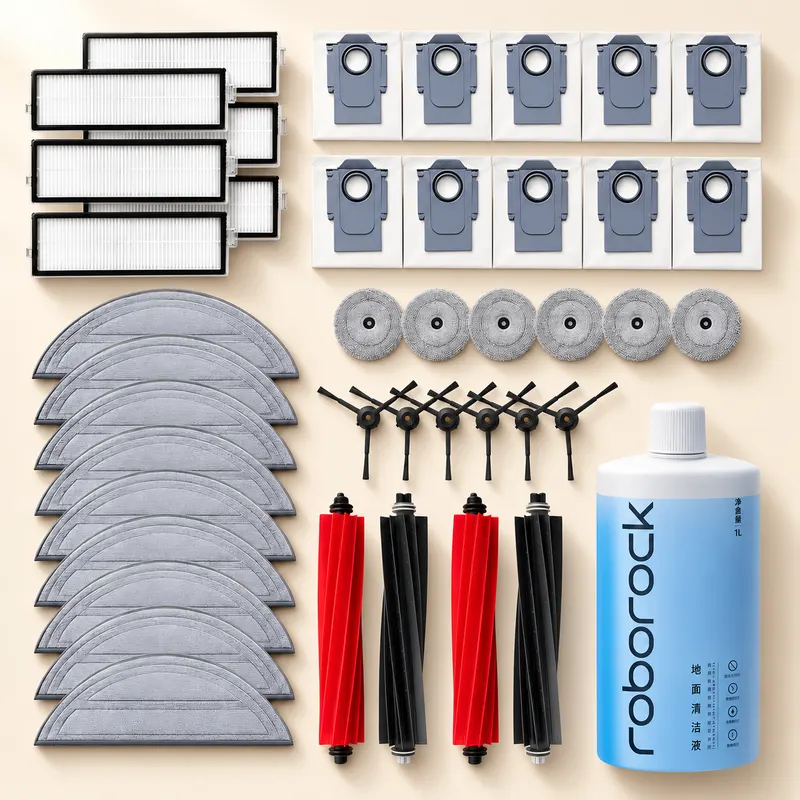
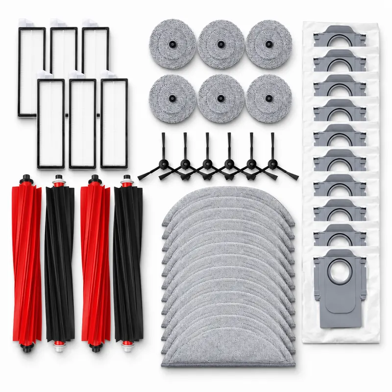
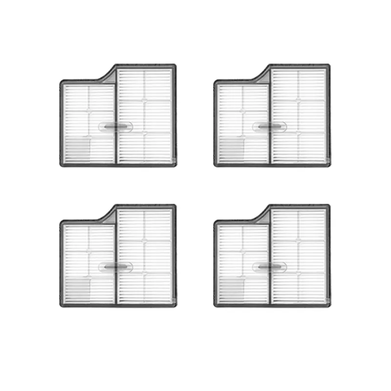
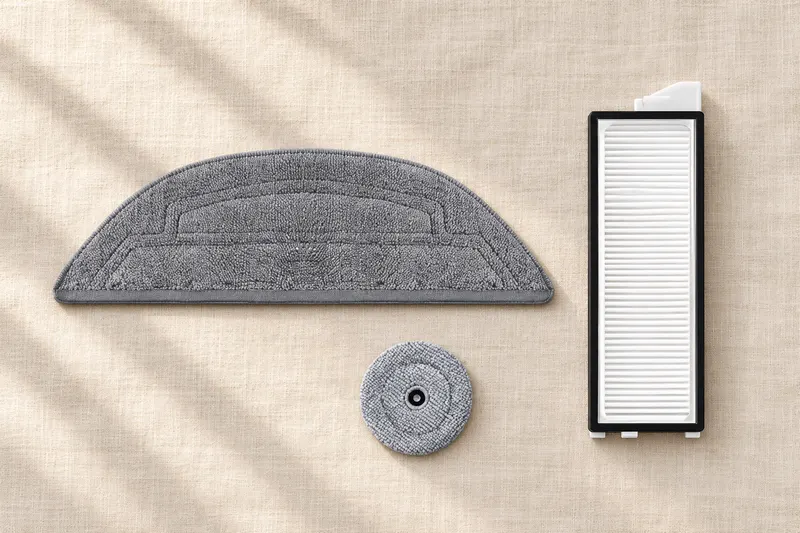
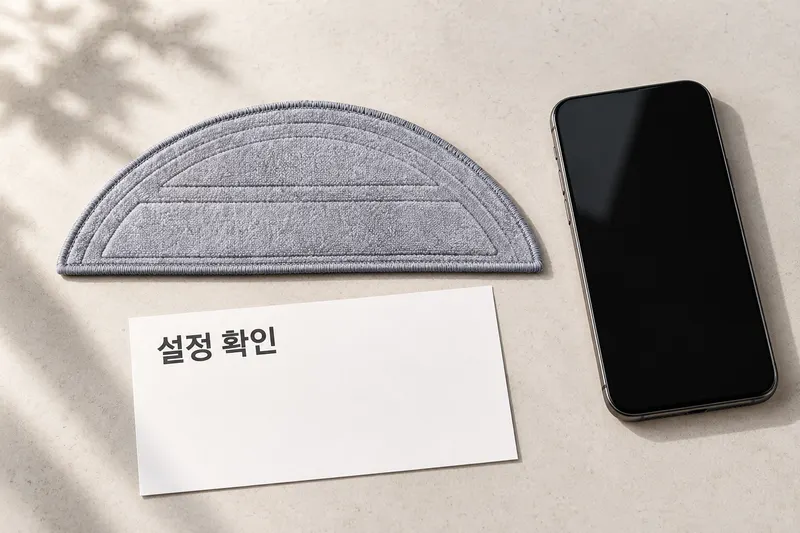
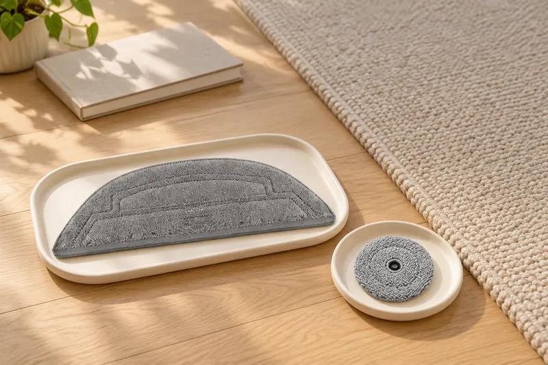
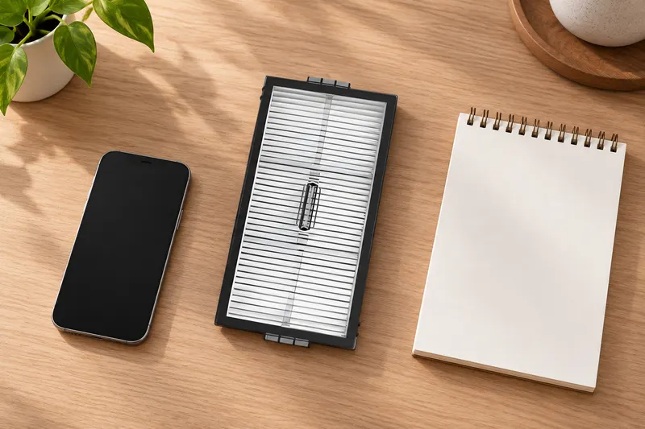
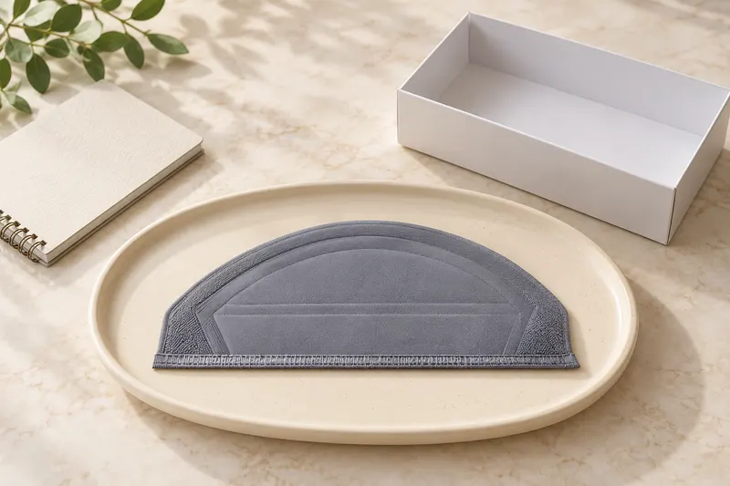

로보락
계단식 단차형 필터 오주문 예방하는 로보락 S9 MaxV Ultra 세제 미포함 세트 점검표
계단식 단차형 필터 오주문 예방하는 로보락 S9 MaxV Ultra 세제 미포함 세트 점검표 핵심 규격·교체 기준 요약. 한눈에 구별하는 S9 고유 포인트: 계단식 단차형 필터와 황토색 카드 더스트백: S9 MaxV Ultra 먼지통 필터는 테두리 한쪽이 계단처럼 꺾...

계단식 단차형 필터 오주문 예방하는 로보락 S9 MaxV Ultra 세제 미포함 세트 점검표 핵심 규격·교체 기준 요약. 한눈에 구별하는 S9 고유 포인트: 계단식 단차형 필터와 황토색 카드 더스트백: S9 MaxV Ultra 먼지통 필터는 테두리 한쪽이 계단처럼 꺾...

세정제 여분 있는 가정을 위한 로보락 S10 MaxV Ultra 세제 미포함 1년·6개월 세트 핵심 규격·교체 기준 요약. 강마루나 헤링본 원목마루가 깔린 거실에서는 물걸레 패드에 단단한 먼지 알갱이가 박힌 채로 문질러지지 않도록 브러시 선(先)흡입과 걸레 패드 청결...

도크 자동 세제통 정량 리필을 위한 로보락 정품 클리너 1L 1병·2병 선택 기준 핵심 규격·교체 기준 요약. 고기나 생선을 구운 뒤 주방 바닥에 남은 미세한 기름막은 맹물 걸레질만으로는 뽀득하게 닦이지 않는 경우가 많습니다.

비대칭 단차형 필터·황토색 더스트백 규격 맞추는 로보락 S9 MaxV Ultra 9종 세트 가이드 핵심 규격·교체 기준 요약. 거실에 단모 러그를 깔아 두었거나 반려동물과 함께 생활하는 가정에서는 로봇청소기 브러시 틈새와 먼지통 필터에 털과 미세 각질이 평소보다

도크 고속 세척브러시·5발 사이드브러시 주기별 교체하는 로보락 S8 Pro Ultra 1년 세트 핵심 규격·교체 기준 요약. 물걸레 세척 후 바닥에 미세한 물자국이 남거나 도크 트레이 주변이 꿉꿉해졌다면 본체 걸레 패드뿐 아니라 도크 하단에서 걸레를 문질러 씻어주는...

매일 물걸레 청소하는 가정을 위한 로보락 S10 MaxV Ultra 브러시·걸레·세제 9종 세트 핵심 규격·교체 기준 요약. 거실 마루와 주방을 매일 로봇청소기로 관리하는 가정에서는 필터와 걸레 패드, 더스트백을 하나씩 낱개로 사는 것보다

베란다 티크 매트 통풍 건조로 냄새 막는 로보락 Qrevo 2 Pro 원형 걸레·필터 1년 세트 핵심 규격·교체 기준 요약. 거실 강마루와 주방 타일을 오가며 회전 물걸레 청소를 수행하는 로보락 Qrevo 2 Pro는 레드 스파이럴 고무 메인브러시와 원형 걸레 패드의...

롤러 슬리브 안쪽 코어까지 바짝 말리는 로보락 Q Revo Curv 2 Flow 1년 소모품 세트 핵심 규격·교체 기준 요약. 로보락 Q Revo 라인업 중 Q Revo Curv(회전 원형 패드)와 Q Revo Curv 2 Flow(원통형 롤러 물걸레)는 하단 물걸레...
계단식 단차형 필터·황토색 더스트백 규격 맞추는 로보락 S9 MaxV Ultra 9종 소모품 세트 핵심 규격·교체 기준 요약. 거실에 단모 러그를 깔아 두었거나 반려동물과 함께 생활하는 가정에서는 로봇청소기 브러시 틈새와 먼지통 필터에 털과 미세 각질이 평소보다
주말 도크 세척브러시·반원형 걸레 점검하는 로보락 S8 Pro Ultra 호환 소모품 1년 세트 핵심 규격·교체 기준 요약. 물걸레 세척 후 바닥에 미세한 물자국이 남거나 도크 트레이 주변이 꿉꿉해졌다면 본체 걸레 패드뿐 아니라 도크 하단에서 걸레를 문질러 씻어주는...
거실·주방 매일 청소하는 집을 위한 로보락 S10 MaxV Ultra 9종 세트 선택법 핵심 규격·교체 기준 요약. 거실 마루와 주방을 매일 로봇청소기로 관리하는 가정에서는 필터와 걸레 패드, 더스트백을 하나씩 낱개로 사는 것보다
강마루·타일 바닥재별 로보락 Qrevo 2 Pro 회전 걸레·브러시 1년 세트 관리 핵심 규격·교체 기준 요약. 거실 강마루와 주방 타일을 오가며 회전 물걸레 청소를 수행하는 로보락 Qrevo 2 Pro는 레드 스파이럴 고무 메인브러시와 원형 걸레 패드의 밀착력을 일...
로보락 Q Revo Curv vs Curv 2 Flow 물걸레 차이점과 Curv 2 Flow 1년 세트 핵심 규격·교체 기준 요약. 로보락 Q Revo 라인업 중 Q Revo Curv(회전 원형 패드)와 Q Revo Curv 2 Flow(원통형 롤러 물걸레)는 하단...

나르왈 아쿠아 청소기 S10 Pro·S20 Pro·S30 Pro 롤러·필터 관리와 S10 Pro 1년 세트 핵심 규격·교체 기준 요약. 핸디형 습식 아쿠아 물걸레 청소기인 나르왈 S10 Pro를 매일 쓰다

포세린 타일 바닥 줄눈 청소 후 로보락 S8 MaxV Ultra 세제 포함 1년 세트 관리 핵심 규격·교체 기준 요약. 무광 포세린 타일이나 폴리싱 타일 바닥은 줄눈 턱이 있어 로봇청소기 사이드브러시와 물걸레 패드가 일반 장판보다
로보락 S9 vs S10 필터·더스트백 규격 차이 비교와 S9 세제 미포함 세트 핵심 규격·교체 기준 요약. 한눈에 구별하는 S9 고유 포인트: 계단식 단차형 필터와 황토색 카드 더스트백: S9 MaxV Ultra 먼지통 필터는 테두리 한쪽이 계단처럼 꺾인 비대칭 단...
헤링본 원목마루 집의 로보락 S10 MaxV Ultra 브러시·걸레 관리와 세제 미포함 세트 핵심 규격·교체 기준 요약. 강마루나 헤링본 원목마루가 깔린 거실에서는 물걸레 패드에 단단한 먼지 알갱이가 박힌 채로 문질러지지 않도록 브러시 선(先)흡입과 걸레 패드 청결...
주방 요리 후 바닥 기름기 닦을 때 로보락 정품 세제 1L 정량 관리법 핵심 규격·교체 기준 요약. 고기나 생선을 구운 뒤 주방 바닥에 남은 미세한 기름막은 맹물 걸레질만으로는 뽀득하게 닦이지 않는 경우가 많습니다.
반려동물 털·러그 먼지 많은 집을 위한 로보락 S9 MaxV Ultra 브러시·필터 루틴 핵심 규격·교체 기준 요약. 거실에 단모 러그를 깔아 두었거나 반려동물과 함께 생활하는 가정에서는 로봇청소기 브러시 틈새와 먼지통 필터에 털과 미세 각질이 평소보다
로보락 Q Revo 2 Pro 원형 물걸레·듀오브러시 건조와 1년 세트 관리 핵심 규격·교체 기준 요약. 회전형 원형 물걸레와 엉킴 방지 2분할 브러시를 사용하는 로보락 Q Revo 2 Pro는 물걸레 패드와 필터를 여유 있게 교대 건조하면 매일 일정한 청소 컨디션을...
로보락 Q Revo Curv 2 Flow 롤러 물걸레 건조와 1년 세트 보관 팁 핵심 규격·교체 기준 요약. 바닥을 가로지르는 원통형 롤러 물걸레가 탑재된 로보락 Q Revo Curv 2 Flow는 세척 후 롤러 슬리브 안쪽까지 바짝 말려 주는 교대 루틴이 중요합니다.
나르왈 S10 Pro 아쿠아 물걸레청소기 1년 세트 구성과 롤러·필터 관리법 핵심 규격·교체 기준 요약. 주방과 거실 바닥의 액체 오염까지 깔끔하게 닦아내는 나르왈 S10 Pro 아쿠아 물걸레청소기는 브러시 롤러의 극세사 결과 필터의 통기성을 주기적으로 관리해 주는...
로보락 S8 MaxV Ultra 세제 포함 1년 세트 구성과 듀오롤러·걸레 올인원 관리 핵심 규격·교체 기준 요약. 자동 세제 투입 도크를 쓰는 S8 MaxV Ultra 사용자라면 소모품 5종과 전용 클리너를 한 번에 챙길 수 있는 세제 포함 패키지가 편리합니다.
로보락 S9 MaxV Ultra 세제 미포함 1년 세트 구성과 단차형 필터·걸레 관리법 핵심 규격·교체 기준 요약. 전용 세정제는 따로 구비해 두었고 브러시·단차형 필터·메인/미니 물걸레·더스트백만 한 번에 보충하고 싶을 때 세제 미포함 세트가 유용합니다.
로보락 S10 MaxV Ultra 세제 미포함 1년 세트 구성과 브러시·필터 교체 루틴 핵심 규격·교체 기준 요약. 집에 이미 전용 클리너 여분이 충분하다면 브러시·필터·물걸레·더스트백만 알차게 모은 세제 미포함 패키지가 합리적입니다.
로보락 세제 거품 걱정 줄이는 확인 순서와 1L 1병·2병 선택법 핵심 규격·교체 기준 요약. 물걸레 청소 후 바닥이 미끄럽거나 도크에 거품이 남는다면 세정제 종류와 투입량을 먼저 점검해 볼 필요가 있습니다.
로보락 S9 MaxV Ultra 메인·미니 물걸레 점검과 9종 세트 선택 가이드 핵심 규격·교체 기준 요약. S9 MaxV Ultra는 넓은 반원형 메인 물걸레와 가장자리를 닦는 원형 미니 패드를 함께 사용하므로, 걸레를 교체할 때 두 규격의 남은 수량을 함께 맞춰...
로보락 S8 Pro Ultra 듀오롤러 양끝 점검과 1년·6개월·3개월 세트 비교 핵심 규격·교체 기준 요약. 바닥 먼지를 쓸어 담는 S8 Pro Ultra의 적·흑 나선형 듀오롤러는 양끝 회전축 캡 부분에 감긴 머리카락만 주기적으로 빼내 주어도 회전 부담을 크게 덜...

로보락 S8 MaxV Ultra 물걸레·미니 패드 건조 교대와 기간별 세트 고르기 핵심 규격·교체 기준 요약. 벽면 모서리까지 닦아주는 S8 MaxV Ultra는 넓은 반원형 메인 걸레 옆에 작은 원형 엣지 미니 걸레가 함께 회전하기 때문에 두 패드의 마모 상태를 나...
로보락 S9 MaxV Ultra 필터 건조 교대 관리와 여분 기준 세트 고르기 핵심 규격·교체 기준 요약. 먼지통 필터를 물로 헹군 날 로봇청소기를 바로 돌려야 할 때, 완전히 마른 예비 필터 하나가 서랍에 있으면 건조 시간을 기다리지 않고 교대로 장착할 수 있습니다.
[2026-11-13 점검 #113] 로보락 Q Revo Curv 2 Flow 1년 세트 구성과 롤러 물걸레·브러시 관리법 (1년 세트·6개월 세트 옵션) — 로보락QRevoCurv2Flow, 큐레보커브2플로우, 로보락소모품1년세트 핵심 규격 요약
로보락 S8 Pro Ultra 도크 세척브러시·필터 관리와 기간별 세트 선택 기준 핵심 규격·교체 기준 요약. 물걸레 패드를 자주 빨아 써도 세척 후 개운함이 덜하다면 본체 하단뿐 아니라 도크 안쪽 고속 세척브러시와 먼지통 필터 건조 상태까지 함께 살펴볼 시점입니다.
로보락 Q Revo 2 Pro 1년 세트 구성과 원형 물걸레·듀오브러시 관리 핵심 규격·교체 기준 요약. 로보락 Q Revo 2 Pro는 레드·다크그레이 2분할 원추형 메인브러시와 원형 회전 물걸레 패드, 가운데 세로 손잡이 바가 있는 블랙 프레임 필터를 사용합니다.
로보락 S10 MaxV Ultra 브러시·더스트백 점검 순서와 9종 세트 고르는 법 핵심 규격·교체 기준 요약. 로보락 S10 MaxV Ultra를 관리할 때는 가운데 틈으로 머리카락을 모아 보내는 듀오디바이드 브러시 구조와 세로 손잡이 탭이 달린 직사각 필터, 회색...
로보락 S10 MaxV Ultra 필터·더스트백 서랍 정리와 9종 세트 선택법 핵심 규격·교체 기준 요약. 더스트백이나 먼지통 필터를 교체하려 수납함을 열었을 때 새 부품이 종류별로 나뉘어 있으면 필요한 부품만 바로 꺼내 장착할 수 있습니다.
로보락 S8 MaxV Ultra 듀오롤러·미니걸레 점검과 3·6·12개월 세트 비교 핵심 규격·교체 기준 요약. 로보락 S8 MaxV Ultra는 다른 S8 계열과 사이드브러시 발 수, 필터 모양, 가장자리 미니 걸레 유무가 달라 주문 전 부품 규격을 정확히 대조하는...
로보락 Q Revo Curv 2 Flow 1년 세트 구성과 롤러 물걸레·브러시 관리법 핵심 규격·교체 기준 요약. 로보락 Q Revo Curv 2 Flow는 2분할 원추형 메인브러시와 원통형 롤러 물걸레 구조를 사용해 일반 원형 패드 모델과 소모품 형태가 다릅니다.
로보락 전용 세제 1L 보충 시점 기록법과 1병·2병 선택 기준 핵심 규격·교체 기준 요약. 자동 세제 투입 도크나 정수통 희석 방식을 쓰다
로보락 전용 세제 1L 리필 전, 자동 세제통과 정수통 모델 구분하기 핵심 규격·교체 기준 요약. 로보락 S10·S9·S8 시리즈 도크에 전용 클리너를 보충할 때는 자동 세제 카트리지에 원액을 채우는 기종인지, 정수통에 라벨 안내 비율대로 희석해 넣는 기종인지 먼저...
로보락 S9 MaxV Ultra 물걸레 패드 교체 전, 정품·호환 세제 옵션 고르는 기준 핵심 규격·교체 기준 요약. S9 MaxV Ultra 물걸레 패드와 사이드 브러시를 교체할 시기가 다가오면, 소모품 세트를 주문할 때 세제 포함 방식을 어떻게 고를지 함께 고민하...
로보락 S8 Pro Ultra 일시정지 10분 뒤 깜박임, 수면 상태일까요? 핵심 규격·교체 기준 요약. 바닥의 물건을 치우느라 청소를 잠시 멈춰 두었는데, 한참 뒤 전원 표시등이 몇 초 간격으로 깜박인다면 고장부터 걱정되기 쉽습니다.
로보락 S10 MaxV Ultra 물걸레·더스트백 교체 전, 세제 미포함 세트가 맞는 경우 핵심 규격·교체 기준 요약. 물걸레 패드와 더스트백, 필터는 교체할 시점이 됐는데 지난번에 사 둔 클리너 세제는 아직 반 병 이상 남아 있을 때가 있습니다.
로보락 S8 MaxV Ultra 1년·6개월·3개월 세트, 옵션 차액과 여분 점검법 핵심 규격·교체 기준 요약. S8 MaxV Ultra는 듀얼 메인브러시와 큰 물걸레 외에 작은 가장자리 물걸레까지 함께 들어가는 구조라 단품보다
로보락 정품 세제 1L, 1병과 2병 복수구매할인 중 무엇을 고를까요? 핵심 규격·교체 기준 요약. 브러시와 물걸레 여분은 아직 충분한데 세제만 먼저 떨어졌다면, 전체 소모품 세트 대신 세제 단품을 보충할 차례입니다.
로보락 S9 MaxV Ultra 3개월·6개월·1년 세트, 남은 여분으로 고르는 법 핵심 규격·교체 기준 요약. S9 MaxV Ultra의 필터나 물걸레를 갈아 끼우려다
로보락 S10 MaxV Ultra 소모품 세트, 세제 업그레이드와 미포함 고르는 기준 핵심 규격·교체 기준 요약. S10 MaxV Ultra 소모품 세트를 고를 때 3개월·6개월·1년마다
로보락 S8 Pro Ultra 브러시 양끝 머리카락, 캡도 빼서 정리하나요? 핵심 규격·교체 기준 요약. 메인브러시 겉에 감긴 머리카락을 걷어냈는데 양끝에는 여전히 뭉쳐 있나요?
로보락 S8 Pro Ultra 물걸레 전용 모드, 메인브러시는 어떻게 될까요? 핵심 규격·교체 기준 요약. 바닥을 한 번 정리한 뒤 물걸레만 돌리고 싶을 때, 메인브러시와 흡입 팬도 계속 움직일까요?
로보락 S8 MaxV Ultra 오류 42, 도크 세척 브러시가 한쪽에서 멈췄다면? 핵심 규격·교체 기준 요약. 물걸레를 씻던 도크에서 오류 42가 나고 세척 브러시 모듈이 한쪽에 멈췄다면, 소모품부터 주문하기보다
로보락 S8 MaxV Ultra 일시정지 후 도크에 손으로 올리면 청소가 이어질까요? 핵심 규격·교체 기준 요약. 청소가 끝나기 전에 로봇을 멈췄는데, 손으로 들어 도크에 올려도 남은 구역을 이어서 청소할까요?
로보락 S8 MaxV Ultra 먼지통 세척, 전용 세제를 넣어도 될까요? 핵심 규격·교체 기준 요약. 먼지통을 헹구는데 바닥 청소용 세제가 옆에 있으면 조금 넣고 싶을 수 있죠.
로보락 S8 MaxV Ultra 작은 가장자리 물걸레, 나사를 풀어야 할까요? 핵심 규격·교체 기준 요약. 큰 물걸레는 떼어 냈는데 옆의 작은 물걸레는 그대로라면, 같은 방법으로 잡아당기기 전에 고정 방식을 봐 주세요.
로보락 S8 MaxV Ultra 장기 보관, 소모품보다 먼저 챙길 충전 일정 핵심 규격·교체 기준 요약. 장기간 집을 비우거나 로봇청소기를 한동안 쉬게 할 때는 소모품을 더 사 두는 일보다
로보락 S8 Pro Ultra 물통 보충, 뜨거운 물 대신 챙길 순서 핵심 규격·교체 기준 요약. 깨끗한 물통을 다시 채우면서 물을 따뜻하게 해 넣고 싶을 때가 있죠.
로보락 S8 Pro Ultra 브러시 추가 옵션, 메인과 세척을 구분하세요 핵심 규격·교체 기준 요약. 브러시를 추가하려고 옵션을 펼쳤는데 한쪽은 1개, 다른 쪽은 2개라고 쓰여 있으면 수량부터 비교하게 되죠.
로보락 S8 Pro Ultra 소모품 무료배송, 국내배송이라는 뜻일까요? 핵심 규격·교체 기준 요약. 배송비가 무료라고 쓰여 있으면 국내에서 바로 보내는 상품으로 생각하기 쉽죠.
로보락 S8 Pro Ultra 걸레 건조가 중간에 멈췄다면, 버튼과 출발 기록을 보세요 핵심 규격·교체 기준 요약. 청소가 끝난 뒤 걸레를 말리는 동안, 바닥에 흘린 것을 닦으려고 로봇을 다시 출발시키거나 본체 버튼을 누를 때가 있죠.
로보락 S8 Pro Ultra 밤에 먼지 비우기가 안 될 때, 더스트백부터 바꿔야 할까요? 핵심 규격·교체 기준 요약. 밤에 청소를 마친 S8 Pro Ultra가 도크로 돌아왔는데 먼지 비우는 소리가 나지 않았다면, 더스트백부터 새로 살 필요는 없어요.
로보락 S8 Pro Ultra 필터 주문 전, 먼지통 필터와 도크 물필터를 구분하세요 핵심 규격·교체 기준 요약. S8 Pro Ultra 필터를 찾다가 먼지통 안의 필터와 도크 바닥의 필터가 함께 나와 헷갈릴 수 있어요.

로보락 S9 MaxV Ultra 물걸레·더스트백, 따로 추가할 때와 묶음 가격 차이는? 핵심 규격·교체 기준 요약. 물걸레 여분도 줄고 더스트백도 몇 장 남지 않았다면, 두 품목을 함께 준비할 때가 있죠.

로보락 S9 MaxV Ultra 소모품, 세트에 필터 4개를 더 추가하려면? 핵심 규격·교체 기준 요약. 제이상점 S9 MaxV Ultra 상품은 필수 세트를 고른 뒤, 추가 옵션에서 필터 4개를 더하는 방식으로 살펴볼 수 있어요.

로보락 S8 Pro Ultra 사이드 브러시 청소, 나사 분리와 재장착 순서 핵심 규격·교체 기준 요약. 판매자 안내｜제이상점이 제조사 공식 설명서와 현재 자사 상품·옵션을 조사해 직접 작성했습니다.

로보락 S8 MaxV Ultra 앞바퀴 청소, 바퀴·축과 고정 브래킷 구분 핵심 규격·교체 기준 요약. 판매자 안내｜제이상점이 제조사 공식 설명서와 현재 자사 상품·옵션을 조사해 직접 작성했습니다.

제이상점 넾다세일 쿠폰 2장, 발급 시간과 중복 적용 조건 핵심 규격·교체 기준 요약. 판매자 안내｜로봇청소기 소모품 전문점 제이상점이 공식 행사 안내와 자사 공지 자료를 바탕으로 직접 작성했습니다.

로보락 S9 MaxV Ultra 물만 쓸 때, 자동 세제 투입 설정 확인법 핵심 규격·교체 기준 요약. 판매자 안내｜제이상점이 제조사 공식 자료와 현재 자사 상품·옵션을 조사해 직접 작성했습니다.

로보락 S10 MaxV Ultra 도크 세척과 바닥 청소, 온수 안내가 다른 이유 핵심 규격·교체 기준 요약. 판매자 안내｜제이상점이 제조사 공식 자료와 현재 자사 상품·옵션을 조사해 직접 작성했습니다.

로보락 세제 리필 시점 기록하기, 한 병 사용 기간을 고정하기 어려운 이유 핵심 규격·교체 기준 요약. 판매자 안내｜제이상점이 제조사 공식 자료와 현재 자사 상품 정보를 조사해 직접 작성했습니다.

로보락 S8 MaxV Ultra 듀얼 롤러, 새 브러시 구매 전에 보는 마모 상태 핵심 규격·교체 기준 요약. 판매자 안내｜제이상점이 제조사 공식 설명서와 자사 상품 정보를 조사해 직접 작성했습니다.

로보락 S8 Pro Ultra 더스트백, 남은 여분과 봉투 상태를 함께 확인하기 핵심 규격·교체 기준 요약. 판매자 안내｜제이상점이 제조사 공식 설명서와 자사 상품 정보를 조사해 직접 작성했습니다.

로보락 S9 MaxV Ultra 도크 주변 공간, 소모품 보관 자리와 구분하는 법 핵심 규격·교체 기준 요약. 판매자 안내｜제이상점이 제조사 공식 자료와 자사 상품 정보를 조사해 직접 작성했습니다.

로보락 S10 MaxV Ultra 전용 클리너는 기본 제공될까요? 본체 구매와 리필 구분 핵심 규격·교체 기준 요약. 판매자 안내｜제이상점이 제조사 공식 자료와 현재 자사 상품·옵션을 조사해 직접 작성했습니다.

로보락 세제 480ml·1L, 해외 라벨 안내를 그대로 써도 될까요? 핵심 규격·교체 기준 요약. 판매자 안내｜제이상점이 제조사 공식 자료와 현재 자사 판매 옵션을 조사해 직접 작성했습니다.

로보락 S8 MaxV Ultra 카펫 우선·딥 카펫 청소 차이 핵심 규격·교체 기준 요약. 판매자 안내｜제이상점이 제조사 공식 자료와 현재 판매 옵션을 조사해 직접 작성했습니다.

로보락 S8 Pro Ultra 물걸레 세척, 천 패드와 고정판 분리 차이 핵심 규격·교체 기준 요약. 판매자 안내｜제이상점이 제조사 공식 설명서와 현재 판매 옵션을 조사해 직접 작성했습니다.

로보락 S9 MaxV Ultra 물걸레 세트, 메인·미니 수량 확인법 핵심 규격·교체 기준 요약. 판매자 안내｜제이상점이 제조사 공식 자료와 현재 판매 옵션을 조사해 직접 작성했습니다.

로보락 S10 MaxV Ultra 필터 호환 문의, 앞·뒤·옆 사진 찍는 법 핵심 규격·교체 기준 요약. 판매자 안내｜제이상점이 제조사 공식 자료와 현재 판매 옵션을 조사해 직접 작성했습니다.

로보락 정품 세제 1L, 1병·2병 구매 수량 계산 핵심 규격·교체 기준 요약. 판매자 안내｜제이상점이 공식 자료와 현재 판매 옵션을 조사해 직접 작성했습니다.
로보락 S8 MaxV Ultra 물걸레 재세척·바닥 재청소 차이 핵심 규격·교체 기준 요약. 판매자 안내｜제이상점이 공식 설명서와 현재 판매 옵션을 바탕으로 직접 작성했습니다.

로보락 S8 Pro Ultra 필터 세척 후 24시간 건조·재장착 안내 핵심 규격·교체 기준 요약. 판매자 안내｜제이상점이 공식 설명서와 현재 판매 옵션을 바탕으로 직접 작성했습니다.
로보락 S9 MaxV Ultra 물걸레 자동 분리와 리프팅 차이 핵심 규격·교체 기준 요약. 판매자 안내｜제이상점이 직접 작성했으며 자사 스마트스토어 마케팅 링크를 포함합니다.

로보락 S10 MaxV Ultra 더스트백 교체 알림, 앱과 따로 확인할 것 핵심 규격·교체 기준 요약. 판매자 안내｜제이상점이 직접 작성했으며 자사 스마트스토어 마케팅 링크를 포함합니다.
로보락 세제 거품이 많을 때, 로봇청소기 사용 전 확인할 점 핵심 규격·교체 기준 요약. 판매자 안내｜제이상점이 공식 자료와 현재 판매 구성을 확인해 작성했습니다.
로보락 S8 MaxV Ultra 세제 자동 투입과 소모품 준비 체크 핵심 규격·교체 기준 요약. 판매자 안내｜제이상점이 공식 자료와 현재 판매 구성을 확인해 작성했습니다.
로보락 S8 Pro Ultra 소모품, S8 MaxV와 헷갈리지 않는 주문 체크 핵심 규격·교체 기준 요약. 판매자 안내｜제이상점이 공식 자료와 현재 판매 구성을 확인해 작성했습니다.
로보락 S9 MaxV Ultra 소모품 교체 전 확인할 4가지와 세트 선택법 핵심 규격·교체 기준 요약. 판매자 안내｜제이상점이 직접 작성한 상품 안내 글이며 자사 스마트스토어 구매 링크를 포함합니다.

로보락 S10 MaxV Ultra 소모품, 세제·물걸레·더스트백 세트 고르는 법 핵심 규격·교체 기준 요약. 판매자 안내｜제이상점이 직접 작성한 상품 안내 글이며, 자사 스마트스토어 구매 링크를 포함합니다.